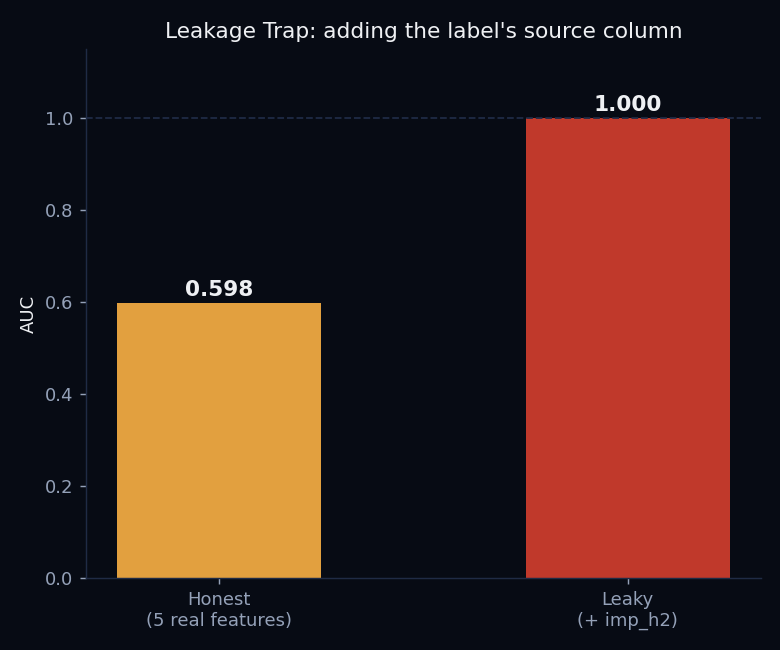
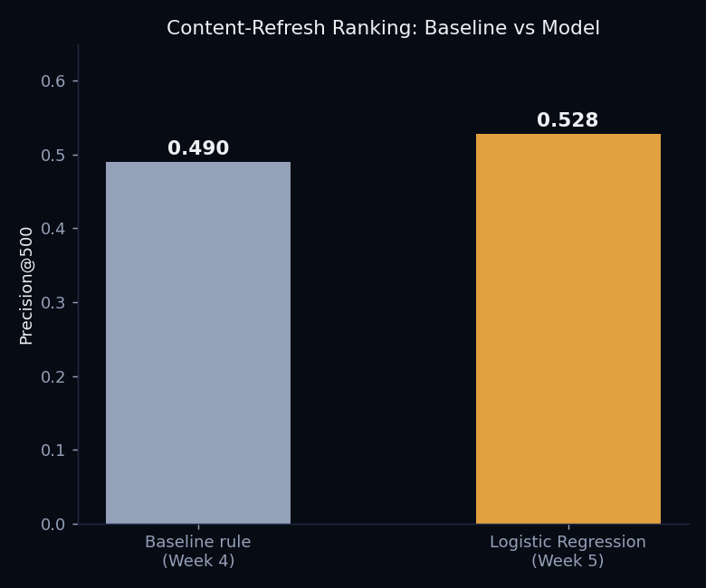

FlyRank ML Internship
Content Refresh Prioritization • Applied Search Intelligence
Designed and deployed a machine learning ranking model to prioritize content refresh opportunities using 9.8 million rows of anonymized production search data. Built an end-to-end pipeline including data validation, leakage detection, feature engineering, model evaluation, and an AI-powered explanation agent that outperformed a hand-crafted baseline.
Read the full research paper → ← Back to Portfolio9.8M
Rows Queried (DuckDB)
55
Anonymized Clients
0.528
Precision@500 (Model)
0.598
Honest AUC (Leakage Check)
Project Highlights
Production Dataset
Processed 9.8 million rows across 55 anonymized clients using DuckDB.
Leakage Detection
Identified and removed a data leakage feature that falsely increased model AUC from 0.598 to 1.000.
Model Performance
Improved Precision@500 from 0.490 to 0.528 compared with the rule-based baseline.
The Decision
Editors can't review every page on a client's site every month. The question this project answers: which pages should get reviewed first? I framed this as a scoring task — rank content pages by an opportunity score, and check how many of the top-ranked pages are actually declining. The metric I committed to before training anything: Precision@500 — of the top 500 pages by score, what fraction are truly declining pages worth a human's time.
Data Contract First
Before any modeling, I queried the FlyRank internship warehouse directly with DuckDB (9.84M rows across 55 anonymized clients and 331K content pages, March 2026) and verified my assumptions with actual queries rather than trusting them:
Grain Check
Verified one row = one (page, client, day). Zero duplicate combinations found across 9.8M rows.
Availability Check
Only 4.2% of rows had real GA4 data — so the feature set was built to not depend on it being present.
Decision-Moment Cutoff
Every feature is built only from the first half of March. Nothing from the scoring window leaks into the inputs.
The Leakage Trap
To prove the feature set was actually clean (not just claimed clean), I deliberately built the leaky version first, then removed it:

Using only the 5 legitimate, decision-moment-safe features (impressions, clicks, average position, CTR, and GA4 availability — all from the first half of the month), the honest model scored AUC 0.598. Adding imp_h2 — the exact column the label is computed from — pushed the score to a suspicious AUC 1.000. That's not a better model, it's the model re-deriving the label from its own source. I removed the leak and reported the honest number.
The Model
For the final scoring model I used Logistic Regression — interpretable, fast, and gives a probability I can rank pages by. I split by client_id rather than by row (GroupShuffleSplit), so no client appears in both train and test — a fairer test of generalization to clients the model hasn't seen. Trained on 22,885 rows, tested on 7,115.

The model beat the Week 4 hand-written baseline rule on the held-out test set: 0.490 → 0.528 Precision@500. The two features it leaned on most: content_age_days (negative — older content was actually less likely to be declining, maybe because long-lived pages have already proven they're stable) and days_since_last_update (positive — the more intuitive signal: pages that haven't been touched in a while are more likely declining).
From Model to Agent
This case study is also the foundation for a shipped agent — a Content-Refresh Triage Agent that reuses this model's real feature set and feature weighting, with Claude reasoning over the score to explain each triage call in plain language.
Try the live agent →Tech Stack
Lessons Learned
- A data contract isn't a formality — the grain and availability checks caught assumptions I would have otherwise just trusted.
- Leakage doesn't always look obviously wrong. AUC 1.000 was the red flag, not a "hint" in the data itself.
- Splitting by client, not by row, is the honest way to test generalization when the real deployment question is "will this work on a client I haven't seen yet."
- A modest, real improvement (0.490 → 0.528) reported honestly is worth more than an inflated number from a leaky pipeline.